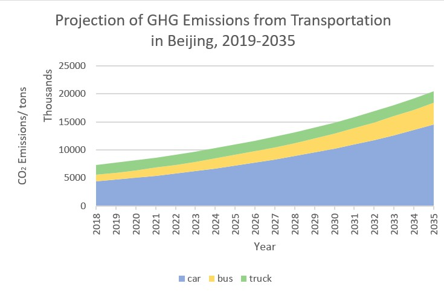
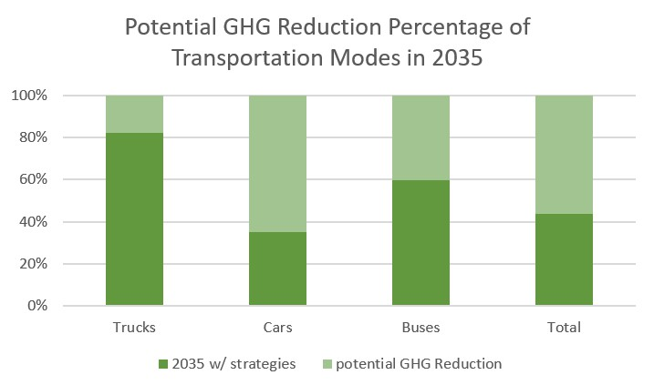

Projection of Beijing’s Annual Transportation GHG Emissions in 2035
Assumptions
- GDP growth rate is taken as a proxy for PKT increase rate. It is assumed to maintain 6.5% (GDP growth rate in 2017-2018) from 2018 to 2035.
- Cargo turnover will increase as a rate of 0.8%, which is an regression result from historic data in last 5 years. Heavy-duty and medium-duty freight have both 50% turnover share.
- The PKT share of buses accounts for 70% of diesel and 30% of LNG buses; the PKT share of trucks are 70% of diesel and 30% of gasoline trucks. Cars are considered as gasoline cars.
- Transportation inter-city is not included in the discussion.
Method
Responsible for calculation of tranportation modes including private cars, buses and trucks:
| Mode | Type | Equation |
|---|---|---|
| Private Cars | Gasoline Cars | CO2= pop * PKT/pop * VKT/PKT * E/VKT * CO2/E |
| Electric Cars | CO2= pop * PKT/pop * VKT/PKT * Efficiency * Emission Factorgrid | |
| Buses | Diesel/LNG Buses | CO2= pop * PKT/pop * VKT/PKT * E/VKT * CO2/E |
| Electric Buses | CO2= pop * PKT/pop * VKT/PKT * Efficiency * Emission Factorgrid | |
| Trucks | Diesel/Gasoline/LNG Trucks | CO2 = Q * e * Emission Factorfuel |
| *pop-population, PKT-passenger kilometer travel(km), VKT-vehicle kilometer travel(km), E-energy consumption(Btu), Efficiency(kWh/100km), CO2-CO2 equivalent GHG emisisons(kg), Q-cargo turnover(100km·tons), e-diesel equivalent lorry energy intensity(L/100km·km) | ||
Overview of Results


According to the projection, GHG emissionsof Beijing in 2035 from cars, buses and trucks will increase to three times as it is today. Private cars will still be the major source among these three modes. Howevere, if considered With strategies, projected GHG emissions in 2035 can be 50% of this result. The assumed specific strategies are listed below. Redcution from cars are the most potential approach with a percentage of nearly 70%, especially considering its large contribute to total GHG emissions.
- Increase fuel economy of gasoline cars fleet to 58.8 MPG.
- Increase PKT share of electric cars to 40%, with an average efficiency of 12kWh/100km.
- Increase PKT share of electric buses to , with an anverage efficiency of 75kWh/100km.
- Develop more renewable energy to reduce emission factor of grid to a goal of 0.4kg/kWh.
- Encourage LNG trucks to substitute diesel trucks for medium-duty freight.
Data Sources
- 2019 Beijing Annual Transport Report: http://www.bjtrc.org.cn/List/index/cid/7.html
- Transportation Energy Data Book Edition 37.2
- China Highway: Freight Turnover. https://www.ceicdata.com/zh-hans/china/highway-freight-turnover
- Average Freight Energy Intensity And Activity in 2015. https://www.iea.org/newsroom/energysnapshots/average-freight-energy-intensity-and-activity.html
- How much carbon dioxide is produced when different fuels are burned? EIA website. Last reviewed: June 4, 2019. https://www.eia.gov/tools/faqs/faq.php?id=73&t=11